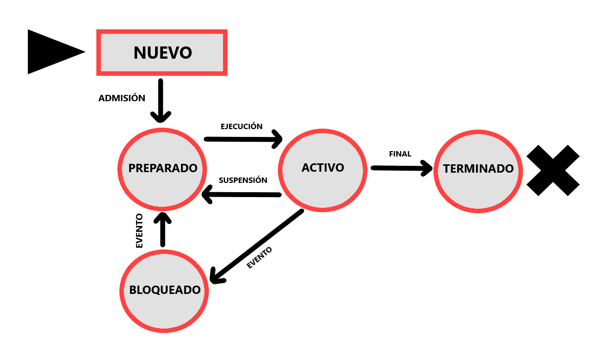
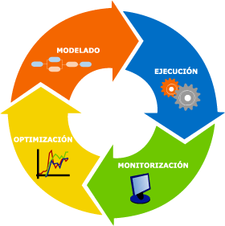

Un sistema operativo es el software principal que administra los recursos del hardware de una computadora y provee servicios esenciales para que otras aplicaciones funcionen correctamente. Actúa como intermediario entre el usuario, el hardware y las aplicaciones, gestionando la ejecución de procesos, memoria, almacenamiento y dispositivos de entrada/salida.
Entre sus funciones principales destacan la gestión de procesos, la administración de memoria, el control de dispositivos, la organización del sistema de archivos y la seguridad. Existen diversos tipos de sistemas operativos, incluyendo sistemas de escritorio como Windows y Linux, y sistemas embebidos usados en dispositivos específicos.
La multitarea y la concurrencia permiten que varios procesos se ejecuten simultáneamente, compartiendo eficientemente los recursos. Para ello, el sistema operativo utiliza técnicas como la planificación de procesos y sincronización para evitar conflictos y garantizar un rendimiento óptimo.
También es fundamental la gestión de memoria, incluyendo memoria virtual, que permite usar espacio en disco para simular memoria RAM adicional, mejorando la capacidad y estabilidad del sistema. Además, el sistema operativo debe asegurar la protección de datos y el acceso controlado a recursos, para evitar vulnerabilidades.

| Estado | Descripción |
|---|---|
| Nuevo | Proceso creado pero no listo para ejecutarse |
| Listo | Proceso esperando ser asignado a CPU |
| Ejecutando | Proceso en ejecución en CPU |
| Bloqueado | Proceso esperando evento o recurso |
| Terminado | Proceso completado y liberado |